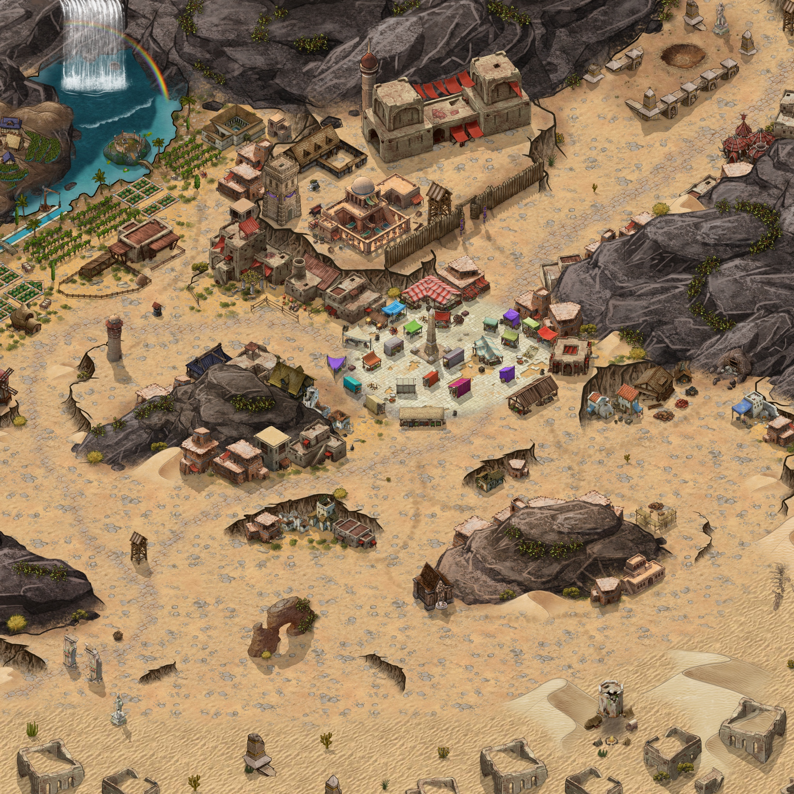

Interaktív térkép, kattints egy épületre!

Az Arcalora Alapítvány kutatóinak tábora. A régi, elpusztított városrészen fekszik egy régi torony lábánál.
Hajdanán rituálék és imák zengtek ezen a szent helyen, ma már csak földbe süllyedt oszlopok és roskatag szobrok merednek csendesen a homokba.
A város legnépszerűbb és talán legjobb állapotban lévő épülete. A fogadót Erős Anu üzemelteti.
Egy egyszerű kupleráj. A fogadó után a második kedvenc helye a város látogatóinak.
Ez a frissen felújított épület helyi központként üzemel a híres Tisztességes Kofák Társasága céhnek.
Megnyugvás a régi isteneket követő lelkeknek. Főleg spirituális és gyógyító szolgálatot tesznek a népnek.
Al-Sanu sajátos elhelyezkedésének hála a ritka mardinali> növény termeszthető a vízesés lábánál, amiből a nagyon értékes lila festék készül.
Ennek az öreg kőfejtőnek a szájánál táblák és barikádok jelzik az üzemen kívül lévő állapotát.
Több karámból álló istálló, mind a földműveléshez és karavánvezetéshez, felfedezéshez használható jószágok tárolására. Hátasokat, szekereket és hozzátartozóit lehet itt vásárolni.
A helyi őrség központja. Fegyverraktárral, gyakorlótérrel és szálláshellyel van ellátva.
Ez a sokat látott erődítmény több funckiót lát el. A város védelmén kívül, az ügyintézés feladatát látja el. Földalatti tömlöcöket és hegybe vájt tároló termeket is rejt.
A város legnagyobb raktár komplexuma. Bérelhető, folyamatosan fegyveres védelem alatt áll.
A központban található bazár. Pár helyi bódé állandóan megtalálható, de a legtöbb bérelt stand az átutazó árusokhoz tartozik.
Al-Sanu megosztott galamb tornya. Habár a tehetőseknek saját tornya van, ez a régi épület biztosítja az általános távközlést.
A város szélén található szerény szőlőskert. A hegyoldalban termesztett szőlőből készült bort a helyi fogadóban lehet megkóstolni, de nagy része export cikként profitot termel.
Az egyszerű öntözőrendszerrel ellátott csekély földek nem elegendők az egész lakosság ellátására. A termés java része a munkásokat illeti, a maradékot pedig a fogadó használja fel, valamint a vésztartalékokat egészíti ki.
Kovács, ács, fazekas, kőműves és egyéb kézműves mesterség műhelye zajong ebben a negyedben.